Ordem Paranormal (sistema ordem_v2_classic 8.0.2) · Foundry VTT 14.369 · mundo nova-ordem · cena de teste Escola 8x · 17/10/2026
Como foi feito. Com o Playwright, entrei no mundo como três usuários de teste sem senha: QA1 (Combatente, nível 3), QA2 (Ocultista, nível 3) e QA Mestra (GM). Joguei a "Escola 8x" como um jogador joga: andei, abri uma porta, abri a ficha, rolei perícias, ataquei, conjurei ritual, entrei em combate e usei o chat. Todos os prints deste documento são dessa sessão.
O que não deu para testar: arrastar o token com o mouse (o clique sintético do Playwright não moveu o token), condições (morrendo, sangrando), reações de defesa/esquiva, áudio e o efeito dos dados 3D. Ficam para um teste com pessoas.
1. Resumo: o que está bom e o que mais incomoda
Funciona bem
Mais incomoda o jogador
Ficha limpa, com Nível e NEX lado a lado, PV, PD, atributos e perícias numa tela só.
Porta abre com um clique e a visão do mapa muda na hora.
Janela de conjurar ritual: busca, filtro, três efeitos (Básico, Discente, Verdadeiro) e custo explícito.
Chat: /r, /w e /gmroll funcionam. Os cartões de ataque e dano mostram o alvo e o tipo de dano.
Combate: ordem de iniciativa, destaque do token da vez e botão Encerrar Turno claros.
Janela "8.0.2 Release Notes" abre em tela cheia para o jogador, a cada entrada. Ela fala de backup do Foundry, assunto do GM.
Chave de tradução crua na ficha: op.targetchoices.1 ser.
Personagem novo começa com PV 5/37 e PD 5/15 (valor atual 5, máximo 37).
Resultado do ataque ambíguo ("CRÍTICO", "FALHA") e só o mestre pode aplicar o dano, sem aviso ao jogador.
Texto do chat de ritual mistura PE, PD e SAN e fala como mensagem de programador.
Rolagem mostra 3d20kh, um código que o jogador não conhece.
2. Entrada no jogo
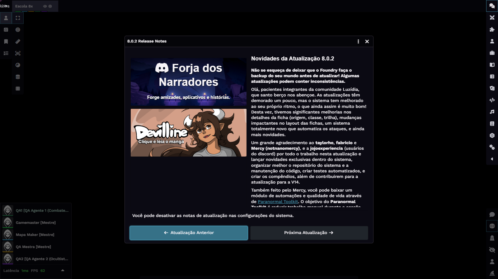
Primeira tela do jogador: o mapa fica preto e uma janela de notas de atualização cobre o centro.
Popup de notas de versão para o jogador. Sugestão: mostrar só ao GM, ou uma vez por versão e por usuário.
Mapa preto. O token novo não tinha visão ativada e a cena tem visão de token ligada. Para o jogador isso parece que o jogo quebrou. Sugestão: tokens de agente com visão ligada por padrão e um aviso ao GM quando um token de jogador não enxerga nada.
Mensagem do Dice So Nice! (tour dos dados 3D) abre o chat em cima de outras coisas. Sugestão: desativar o texto de primeira vez para jogadores.
O token novo aparece com o ícone genérico de encapuzado. Sugestão: usar a imagem do personagem na ficha como token.
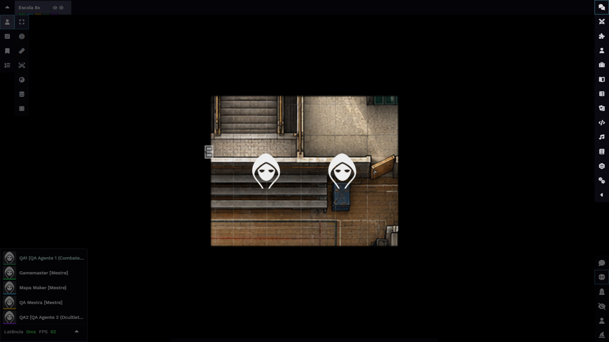
Depois de ligar a visão: o jogador enxerga só a sala. A porta (ícone à esquerda) está fechada.
3. Andar e abrir portas
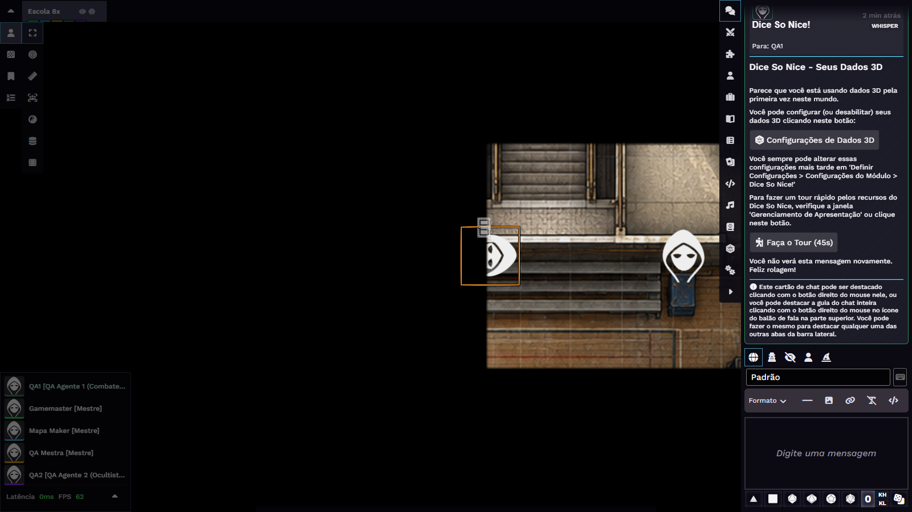
QA1 junto da porta, no teclado (tecla A). O token fica cortado pela parede.
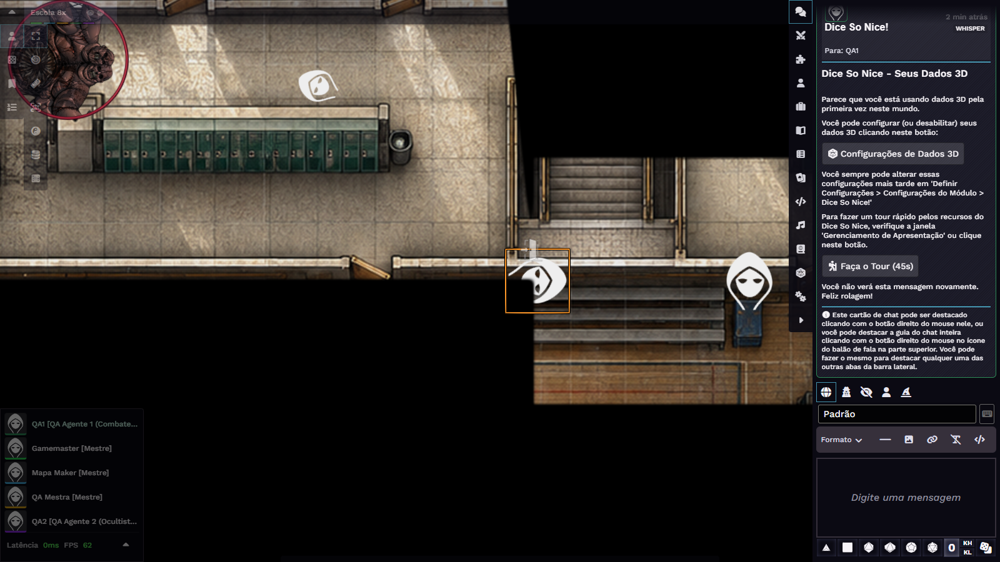
Porta aberta com um clique: aparece o corredor e a Aberração de Carne, que já estava lá.
Teste
Resultado
WASD
Anda. A cena não tem grade, então cada toque move 35% de um quadrado (configuração do módulo meu-modulo).
Setas do teclado
Não moveram o token. O jogador acostumado com as setas acha que o jogo travou.
Abrir porta (clique no ícone)
Abre na hora e libera a visão.
Feedback ao abrir
Nada no chat nem na tela diz que a porta abriu.
Sugestões. Fazer as setas também andarem. Mostrar o deslocamento gasto e o que resta (a ficha diz "Deslocamento 9", sem unidade). Opcional: linha discreta no chat, como "QA1 abriu a porta".
4. Ficha do agente e subida de nível
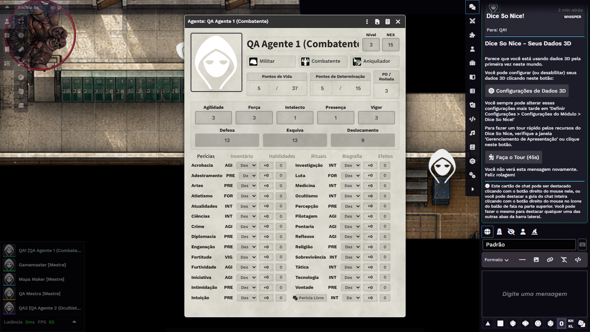
Ficha do QA1. Nível 3 e NEX 15 no topo; PV 37/37 e PD 15/15 já calculados pela classe e pelo nível. As habilidades vieram da origem e da trilha.
Progressão por nível (verificada no jogo)
Mudei o campo Nível com o jogador logado e conferi PV, PD e habilidades. Os números batem com o livro (Combatente, Vigor 3, Presença 1):
Nível
PV máx.
PD máx.
Habilidades recebidas automaticamente
3
37
15
Para Bellum (origem Militar), NEX 10% – A Favorita (trilha Aniquilador)
4
44
19
—
8
72
35
+ NEX 40% – Técnica Secreta
13
107
55
+ NEX 65% – Técnica Sublime
20
156
83
+ NEX 99% – Máquina de Matar
3 (voltando)
37
15
As habilidades de nível mais alto saem
Ao subir de nível, o valor atual de PV e PD sobe junto com o máximo (do nível 3 ao 4, PV 37 → 44 e PD 15 → 19).
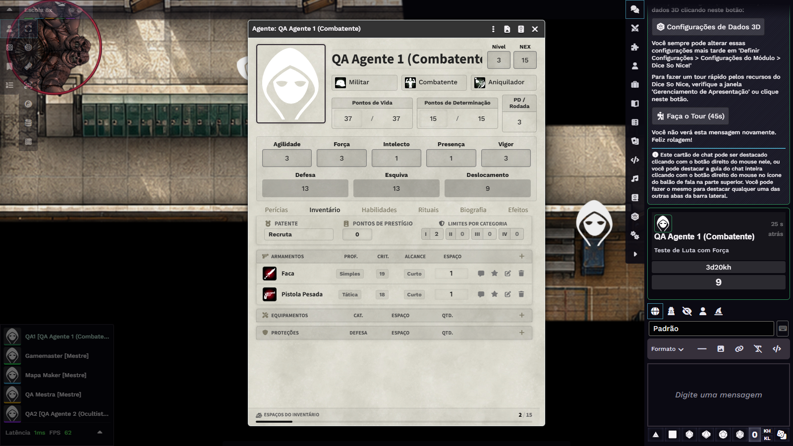
Aba Inventário: armas com ícones à direita (balão, estrela, editar, lixeira).
PV/PD atuais começam em 5. O QA1 abriu a ficha com PV 5/37 e o QA2 com PV 5/22. Sugestão: ao definir classe e nível, preencher os valores atuais com o máximo.
Colunas sem rótulo. Em cada perícia há duas caixas ("+0" e "0") sem título. O jogador não sabe qual é bônus e qual é total.
Siglas cortadas. O seletor de treinamento mostra "Des"/"De" e o nome do personagem some no título ("QA Agente 1 (Combatente").
Sem unidade. Deslocamento "9": metros? quadrados?
5. Rolagens e chat
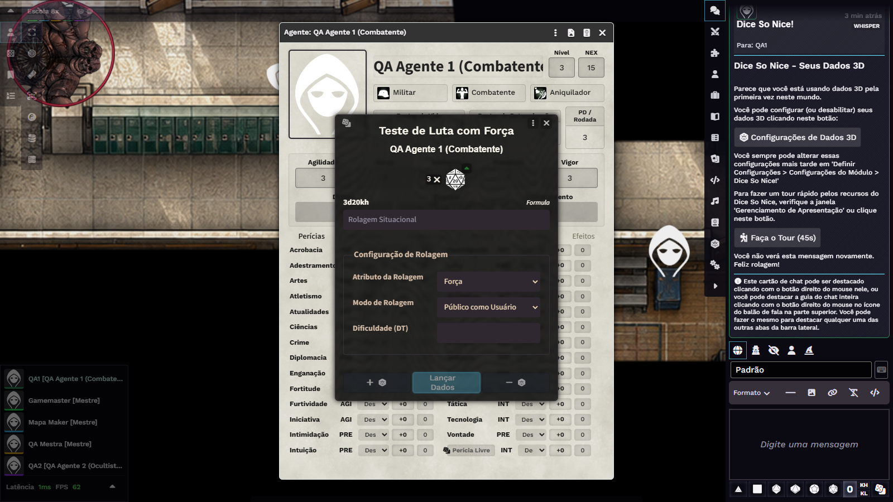
Clique em "Luta": janela "Teste de Luta com Força".
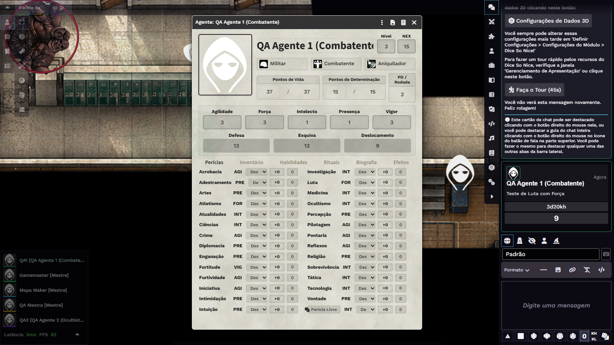
Resultado no chat: só a fórmula 3d20kh e o número 9.
3d20kh é notação de programador. Sugestão: "3 dados, vale o maior" (e "2 dados, vale o menor" quando houver penalidade).
"Rolagem Situacional" e "Público como Usuário" pedem explicação. Sugestão: "Bônus ou penalidade da situação" e "Rolagem pública".
Sem decomposição. O card não diz de onde vêm os dados nem o bônus (perícia Luta, Força 3). Sugestão: linha pequena "Luta (Treinado, +5) · Força 3".
Sem sucesso ou falha quando não há DT. Sugestão: perguntar a DT na hora, ou mostrar "total 9 (precisa da DT do mestre)".
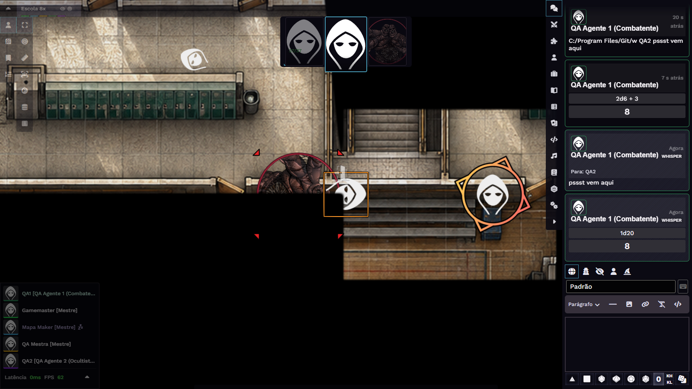
Comandos de chat: /r 2d6+3, mensagem privada /w QA2 e /gmroll 1d20.
Comandos funcionam.
/gmroll mostra ao jogador só o selo "WHISPER" e o resultado. Para o jogador não fica claro que o mestre também viu, nem que esse resultado é privado.
Chat pesado. Cada mensagem tem avatar e cabeçalho grandes; numa cena de combate o histórico enche rápido. Sugestão: modo compacto, com mensagens consecutivas do mesmo personagem agrupadas.
Com o painel lateral na aba Combate, o jogador não vê o chat e precisa trocar de aba para ler o resultado das rolagens. Sugestão: manter o chat visível durante o combate.
6. Combate
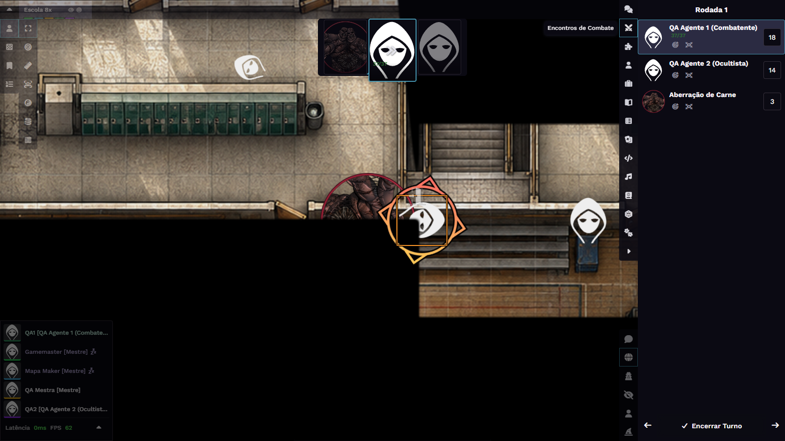
Combate para o jogador: faixa de iniciativa em cima, lista na lateral, token da vez destacado, botão Encerrar Turno.
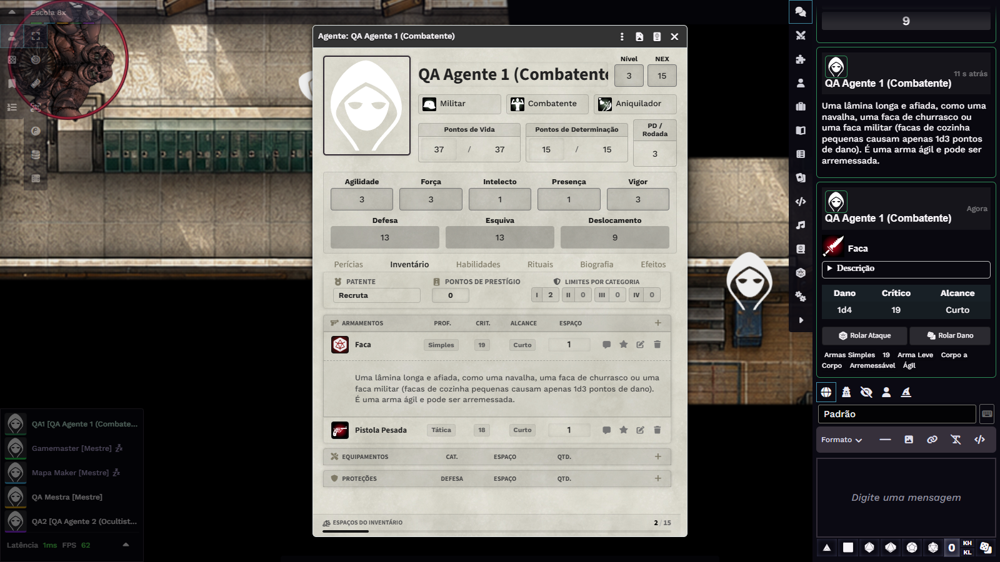
Clicar no ícone da Faca posta o card da arma, com "Rolar Ataque" e "Rolar Dano".
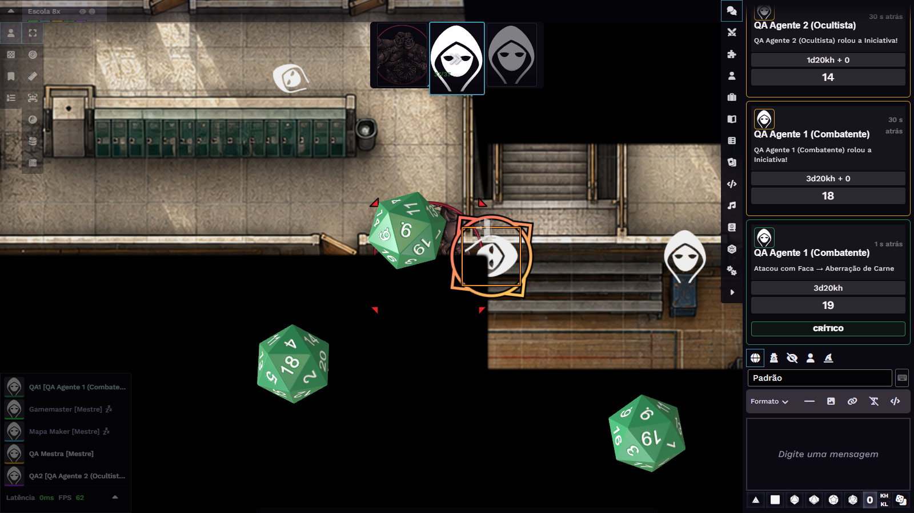
"Rolar Ataque" com o alvo marcado (tecla T): "Atacou com Faca → Aberração de Carne", 19, CRÍTICO.
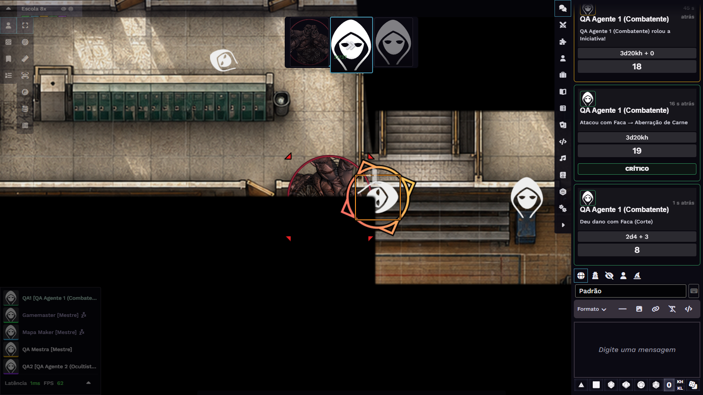
Dano: "Deu dano com Faca (Corte)", 2d4 + 3 = 8.
Ponto
Observação
Iniciativa
Rolada pelo GM para todos; aparece no chat e no tracker.
Dois jeitos de usar uma arma
O balão posta só a descrição da arma. O ícone da arma posta o card com os botões de ataque. Quem clica no balão não acha como atacar. Sugestão: botão "Atacar" explícito na linha da arma, e trocar o balão por "Ver descrição".
Acerto ou erro
O sistema calcula acerto contra a Defesa e mostra ACERTO, FALHA ou CRÍTICO, mas "CRÍTICO" não diz que acertou e "FALHA" parece falha de teste. Sugestão: "Acertou", "Acertou — crítico" e "Errou o ataque".
Aplicar dano
O botão "Aplicar ao Alvo" existe só para o GM. O monstro continuou com 70/70 PV e nada avisa o jogador que o dano espera o mestre.
Crítico no dano
O dano mostra 2d4 + 3 sem dizer que os dados dobraram por causa do crítico (Faca 19).
Texto do chat
"Atacou com Faca → Aberração de Carne" e "Deu dano com Faca" estão claros. Falta o nome do alvo no card de dano.
7. Rituais (Ocultista)
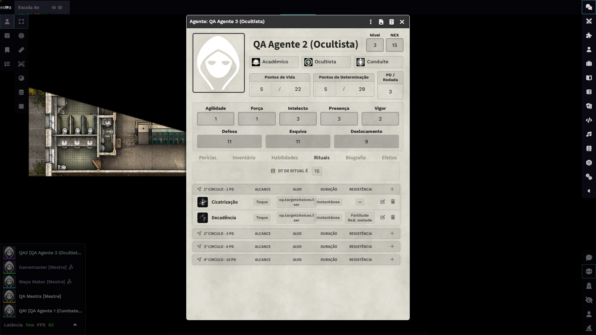
Aba Rituais do QA2: no campo "Alvo" aparece op.targetchoices.1 ser, uma chave de tradução não resolvida.
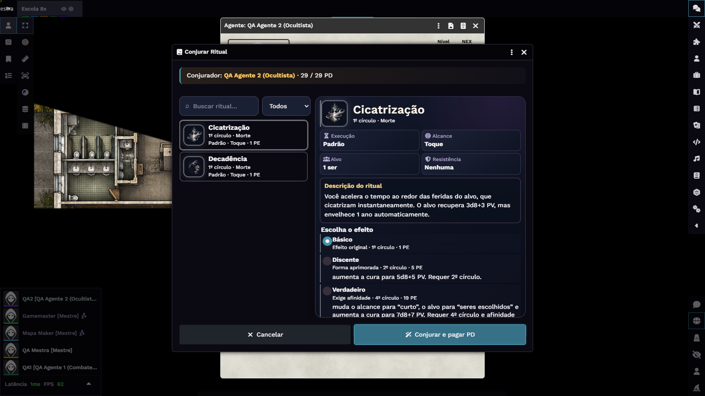
Janela "Conjurar Ritual": efeitos Básico, Discente e Verdadeiro, com custo.
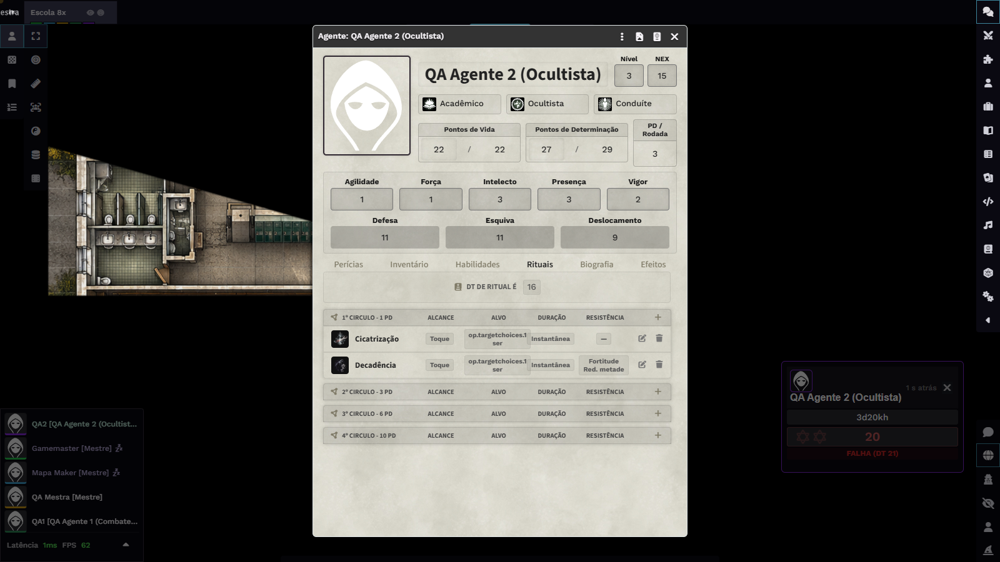
Depois de conjurar: o jogo exige um teste de Ocultismo (DT 21) e mostra um popup vermelho "FALHA (DT 21)".
Chave de tradução cruaop.targetchoices.1 ser (deveria ser "1 ser").
Mistura de PE e PD. A janela mostra "1 PE" e "5 PE" nos efeitos, e o botão diz "pagar PD". A ficha usa "1º CÍRCULO - 1 PD". Com a regra "Jogando sem Sanidade", tudo deveria falar PD.
Teste surpresa. Depois de confirmar o ritual abre "Teste de Ocultismo com Intelecto", com DT 21 já preenchida, sem explicar que é o "Custo do Paranormal". A ficha mostra "DT DE RITUAL É 16", e a janela mostra DT 21. O jogador não entende de onde vem 21.
Texto do chat com cara de nota de desenvolvimento. Exemplos reais:
"Ritual conjurado. Resolva efeitos narrativos/manual do Mestre conforme a descrição."
"Custo do círculo: 1 PE, debitado de PD · consequência de SAN no saldo fundido: 1 PD."
"Alvo(s): Defina o alvo em cena e resolva a resistência ou o efeito conforme a descrição."
Sugestão: "Cicatrização conjurada. Custo: 1 PD. Falhou no teste de Ocultismo (20 contra DT 21): perde mais 1 PD." E uma linha de alvo só quando houver alvo.
O efeito do ritual (cura 3d8+3) não é aplicado nem rolado. Hoje o jogador e o mestre precisam fazer na mão.
8. Visão do mestre
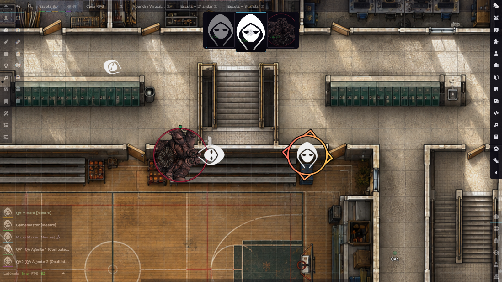
QA Mestra: mapa inteiro, todos os tokens, barra de combate com PV (70/70 no monstro) e a lista de jogadores.
A visão do GM mostra tudo, e o contraste com o jogador (só a sala) é bom para checar visão e paredes.
O popup de release notes também aparece para o GM a cada recarga da página.
Mudar a cena ativa derruba todos os jogadores da cena anterior. Sugestão: um aviso "isso move todos os jogadores", ou uma cena de teste separada para QA.
9. Lista priorizada de melhorias
#
Prioridade
Melhoria
1
Alta
Traduzir op.targetchoices.1 ser na lista de rituais e revisar as demais chaves de tradução.
2
Alta
Iniciar PV e PD atuais no máximo ao definir classe e nível (hoje começam em 5).
3
Alta
Ataque: rótulos claros ("Acertou"/"Errou") e botão "Aplicar dano" para quem atacou (validado pelo mestre), com modo automático opcional. Ver spec-experiencia-jogador.md.
4
Alta
Popup de release notes: só para o GM, uma vez por versão.
5
Alta
Tokens de agente com visão ligada por padrão; evitar o mapa preto na primeira entrada.
6
Média
Padronizar PE/PD/SAN no texto, de acordo com a regra de sanidade escolhida pela mesa (janela de ritual, ficha e chat).
7
Média
Reescrever os textos do chat de ritual em linguagem de jogador (ver exemplos na seção 7) e explicar o teste "Custo do Paranormal" antes de rolar.
8
Média
Trocar 3d20kh por "3 dados, vale o maior" e mostrar de onde vêm os dados e o bônus.
9
Média
Botão "Atacar" explícito na linha da arma; trocar o balão por "Ver descrição".
10
Média
Setas do teclado movendo o token, com deslocamento mostrado e unidade na ficha.
11
Baixa
Rótulos nas duas caixas de cada perícia; selects de treinamento sem texto cortado; nome do personagem completo no título.
12
Baixa
Modo compacto de chat; mensagens consecutivas agrupadas.
13
Baixa
Linha opcional no chat ao abrir e fechar porta.
14
Baixa
Dizer ao jogador, no /gmroll, que o mestre também recebe o resultado.
10. O que ficou no mundo depois do teste
Criados: usuários QA1, QA2 (jogadores, sem senha) e QA Mestra (GM sem senha), os agentes "QA Agente 1 (Combatente)" e "QA Agente 2 (Ocultista)", seus tokens, e paredes com uma porta na cena "Escola 8x" (luz global ligada, visão de token ligada).
Atenção: o servidor tem UPnP ligado. Um GM sem senha é um risco se o mundo estiver acessível na internet. Recomendo apagar a QA Mestra (ou pôr senha) quando terminar.
Apaguei o combate de teste e as mensagens de chat dos usuários QA. A cena ativa voltou para "Escola – 1º andar" e o combate dela não foi tocado.
Removi o script de criação dos usuários de QA do módulo meu-modulo.